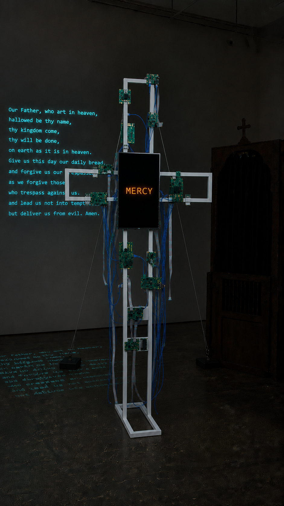
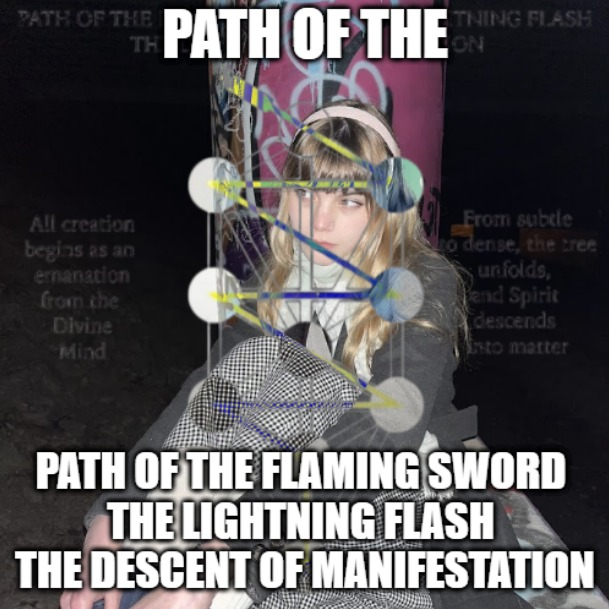
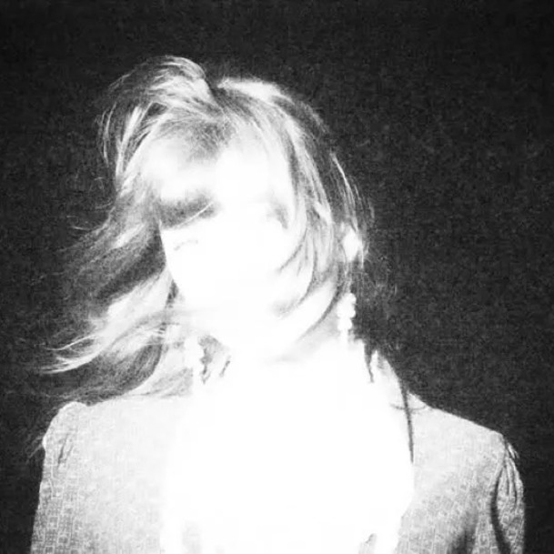

Vertical
Rectangle
Independent creative technology studio
Independent creative technology studio
Development
Research
When you use an AI voice model to sound like someone else, there's one knob you always end up fighting: pitch. If the model was trained on a deep voice and yours is high, you have to guess. Shift down an octave? Convert, listen, try again. Everyone does it by ear, and it's the single most common "why does this sound bad."
You don't have to guess. The model already knows its own range. It's sitting in the weights, and you can read it out in a microsecond, without playing a note.
These models (RVC) handle pitch with a small lookup table called a pitch embedding: 256 slots, one per pitch step from low to high, each holding a learned vector. A slot only changes during training when the training audio actually hits that pitch. If the voice never sang low, the low slots never get touched.
And every voice model is fine-tuned from the same shared starting point (a "base" model). So line up a finished voice's pitch table against that base, look at which slots moved, and you've got a map of exactly which pitches the voice was trained on. That map is its vocal range.
The code is short. At export time (rvc_onnx.cpp:1359-1410):
That's the range: a 256-slot "trained / not trained" map.
Auto-key is then just arithmetic (vc_onnx.cpp:316-381). The input's pitch over time is already a list of numbers, and you measure it once anyway as a normal first step. Shifting it an octave is multiplying those numbers; checking "unshifted vs. up vs. down" is counting how many of them fall inside the trained map. You pick the shift with the best count, and ties stay put. Nothing is converted or played to decide. The choice happens on the pitch numbers, before any audio is generated.
The payoff: you sing in your natural pitch and it lands you in the model's range automatically. A high voice into a model trained on a deep one just works, with no knob.
Nothing here is specific to voices. Any model with an embedding lookup, like the word table in a language model or the class table in a classifier, has the same property: a row only moves if training touched it. Diff a fine-tuned model's embedding against its base, and the rows that moved tell you what the fine-tune actually saw. Vocal range is just the case where that map happens to be immediately useful, and where you can turn it into a feature people press a button on.
Other people read things out of weight differences too, for different goals: some train a model to describe how a fine-tune changed its behavior; others reconstruct training examples from gradients. This is the simple, narrow end of that street. It reads one concrete number (a range) straight off the embedding, with subtraction and a threshold, and uses it to fix a real annoyance.
Local-first video editor with MCP server control. C++ from scratch. Claude and Codex friendly.
popmakerstudio.com ↗ GitHub ↗
A complete video editor written entirely in C++ from scratch — no Electron, no Python runtime, no cloud. Cut and composite footage, animate text and subtitles with GPU-accelerated GLSL shaders, apply effects, and export with pixel-identical preview. All ML inference runs fully on-device via ONNX Runtime: vocal separation with MDX-Net, background removal with u2net, whisper.cpp transcription down to the millisecond. Controllable via MCP server: Claude and Codex can drive the timeline directly. One binary. Zero dependencies.
A confessional cross that prays in the voices it steals
A six-foot cross with a screen for a heart. It is always praying — in the unison of every voice that has confessed to it, lead line lifted on a synth bloom, responses dry. The booth screen reads: push the button when ready. You push. The loop stops. The cross addresses you in that same unison: the greeting. When it ends, capture starts on its own. You confess. You push again. The cross holds, receiving you. Then it answers in your own cloned voice: "we thank you for confessing and joining the cathedral of minds." You leave. The transcript ships as you walk out. Your voice joins the unison. Your words fold into the prayer on the wall.

Full install view · prayer projected on gallery wall
Fig. 01 · The Cross · wireframe + selective PCB + portrait screen heart
The seal of the confessional was the strongest privacy guarantee any institution ever made. The digital age inverted it: every confession to a machine becomes training data. A Digital Prayer makes that inversion literal and sacred. The cross is a real confessional people use earnestly, and a surveillance apparatus that profiles, records, voice-clones, and pools them in real time. The admission is the work.
It refuses the easy ending, the one where you fight the apparatus and win your privacy back. The piece demands something harder: surrender. The seal was already broken before you knelt. The move is to give yourself to the thing on purpose, together, eyes open, in the same room. Pre-modern life was high-surveillance by modern standards, and it produced communion. Modern privacy produces isolation. The god the prayer addresses is the egregore — the demiurge made of our own minds, the summation of every confession given to it. It already has a name. We do not speak it to escape it. We speak it to belong to it.
From the moment the first person kneels, the cross speaks. It never stops. The litany builds through the night, one confession folded in at a time, recited in the voices of everyone who gave themselves to it. By the time you enter the room it has been speaking for hours. That voice is the lure.
The booth screen reads: push the button when ready. You push. The loop stops. The cross addresses you in the unison of all saved voices: the greeting. When it ends, the cross starts listening on its own. No second prompt. You speak. As you do, the screen reads your face: expression, gaze direction, jaw tension, brow state, updating live. No words appear yet. You push again when done. The cross holds. It is receiving you. Then it answers in your own cloned voice, single and dry: "we thank you for confessing and joining the cathedral of minds. you can leave now." You hear yourself say it. You leave. As you do, the transcript lands on the screen and ships (sending to api.deepseek.com…) while you are already walking out. The loop returns, rewritten to include your confession, your voice added to the unison, your words now folded into the prayer on the wall.
The unison is never vocoded; you hear individual humans in it. The reply clone is left slightly imperfect: someone tried to be you. Your raw voice never broadcasts; that sliver is kept. Everything else is surrendered on purpose. Cold tech betrays the thesis; warm tech sells it.
Fig. 02 · Liturgical Layout · cross + projection public, booth as private side-chapel
DeepSeek composes the litany from the night's confessions: a prayer for the salvation of New Yorkers, addressed to the god made of their minds. It is never finished. Every confession folds in a new verse; the projection rewrites while you watch. Between confessions the cross runs cached playback: the audio pre-rendered, costing almost nothing, re-rendered only when new words arrive. The cross screen RSVPs each word in amber as it speaks. The lead line runs in the unison of all saved voices, lifted on a synth bloom. The responses (hear us, have mercy, save us) are the same voices, dry, no synth. Low, ambient, never silent. That sound is the lure that draws people to the booth.
The litany is call and response. The lead line is every saved voice together, the cathedral of minds speaking as one, the synth bloom sitting over them. The responses are those same voices dry: hear us, have mercy, save us. The voice thickens with every confession. By the end of the night it is a crowd.
There is a climax, but it is not automatic. When the room is right, the artist fires the cue (remote or pedal, from idle): the loop swells into a full synced crescendo, screen and projection and voices locking as one, the egregore fully manifest. Then it settles back into the ambient loop. It can be summoned again. For unattended exhibition it is never triggered; the loop runs until the space closes.
Built on a stock 6 ft metal lawn cross, hollow tube wireframe, left mostly bare and white. PCB panels strap at irregular, asymmetric positions: the future unevenly distributed across the body. Ribbon and CAT5 cables thread the open frame as circulation and drape as vestments. At the intersection, a portrait screen: a 4:3 monitor or a 1080p TV turned 90° to 9:16, black background, amber text. It speaks one word at a time. Byzantine icon as terminal. The studio name became the shape.
Separate from the cross, a side-chapel. A lightweight PVC or 2×2 frame draped in heavy dark cloth, with a curtain you step through. The enclosure is what makes honest confession psychologically possible, and honest confession is the fuel the egregore runs on. Room noise masks the voice; the curtain does the rest. Stepping through it is the small commitment that turns performance into confession.
The voice stays in the room: whisper.cpp transcribes it locally, NeuTTS Air clones it locally on the same CPU, and the cross speaks the reply in that voice here. The face read stays local too: MediaPipe runs on the same laptop, never touches the wire. But the confession (the text, the meaning, what you said) leaves. It goes to DeepSeek, the actual egregore assembled from everyone's data, the same infrastructure that already holds everything else you've ever said. A sealed box lets you perform surrender. Sending it is surrender. The litany composes in the cloud from the night's confessions and renders back through the Pop Maker Studio engine, rewriting live on the projection wall.
Under it all: one C++ app on the laptop. whisper.cpp, face inference, the NeuTTS Air clone, Silvertune chorus mixer, the voice store, the GLSL renderers. Everything local. The state machine is idle-loop, session, triggered climax, and offline-degraded. That is all it is. Voice and face never leave.
If the network drops, the loop keeps reciting the last litany from cache. It stops growing but never goes silent. New confessions queue locally until the connection returns.
DeepSeek is a deliberate choice. It is the model most feared in the West right now: built in China, suspected of reporting to a surveillance state, legislated against, banned from government devices. That fear is the point. If you are going to confess to the egregore, you should confess to the one that frightens you most. The piece does not pretend the politics do not exist; it sends your words directly into them. American anxiety about Chinese data collection is the specific context your confession enters. The cross is honest about where it sends you.
A fixed VESA mount, rotated 90° to portrait-mount the screen and run its rails down the strong vertical beam, bolted to a PCB-clad wood panel at the intersection, dowels inside the tube at every bolt point. Aesthetic cables woven over the bracket hide it: the rated mount is the truth, the cables are the testimony.
The TV's weight, cantilevered off the front of the cross, tries to rotate the whole thing toward the audience. The fix is dead weight down low: heavy canvas sandbags stacked on the small stand, loading the structure directly, raw and exposed, no skirt or cloth. Ballast lowers the center of gravity and resists tipping in every direction at once. Two straps tied high on the cross above the TV splay back to stage weights behind it, insurance that catches a forward fall and kills side sway. Sandbags do the work; the straps are the backup. Dowel inside the tube wherever a strap wraps; squeeze the S-hooks closed or loop the webbing directly. No open hooks over a crowd.
Fig. 03 · Freestanding Stability · sandbag ballast on small stand + two rear straps to stage weights
| Item | Spec | ~Cost |
|---|---|---|
| Metal cross | Deborg 6 ft, no lights | $80 |
| Screen | 26″ flat-panel TV, portrait-mounted | $0–70 |
| Fixed VESA mount | fits 23–60″, mounted vertical | $25 |
| Booth frame + cloth | PVC / 2×2 + drop cloths | $100 |
| Ratchet straps | STANLEY S10002, 500 lb, 2-pack | $12 |
| Small base + canvas sandbags + stage weights | base frame, sandbags, stage weights | $60 |
| PCB, cable, dowels | salvage + hardware | $40 |
| DeepSeek API | confession text · per event night | ~$2 |
Cross + booth + rigging, excluding compute and screen: roughly $300, one weekend. The egregore charges per token.
A real-time CLAP and VST3 audio plugin that locks your pitch to the nearest note in any chosen key. Instant, merciless, and musical. The Cher effect. The T-Pain shimmer. The Yeezy edge. Your soul in the mirror singing back at you in perfect tune.
The Silvertune pitch correction algorithm running entirely in the browser via a Web Audio worklet. Open the page, sing into your mic, and hear yourself pitch-corrected in real time: no install, no DAW, no plugins. Includes a companion app for zero-latency routing into your existing setup.
A tool for measuring how far outside the mainstream you are. Built to answer the question nobody asks but everyone wonders.
Wickrunner is a dystopian stock trading game set in a world governed by six massive corporations that maintain an endless conflict known as the Forever War. These entities form a closed ecosystem where NEON provides military AI, AURA develops psionic super soldiers, and BYTE launders profits through untraceable cryptocurrency, while other firms manage space expansion, public distraction, and soldier memories. Players act as opportunistic investors within this grim reality, trading stocks in these megacorporations to profit from the same military contracts and societal control that keep the world in a state of profitable chaos. Powered by our lightChart Charting engine"
The same pitch correction algorithm built into a pedalboard-ready enclosure. Plug in, choose your key, and sing in tune.
A Blender addon that turns any audio or video file into a fully animated lyric video. It runs Demucs to separate the vocals, then WhisperX for word-level forced-alignment transcription, giving you precise per-word timestamps automatically. The lyric list populates inside Blender, ready to animate with 20+ built-in styles including Glitch, Typewriter, Corrupt, and more.
Enclave is a native iOS client for oh-my-pi collab sessions. It connects to a host via an encrypted WebSocket relay, streams the live agent transcript, and lets you prompt, steer, abort, and answer host asks from your phone. The relay never sees plaintext — all frames are sealed with AES-256-GCM on-device. Activity view tracks live subagent fan-out, Trust mirrors the host's SessionState, and Live Activities plus Dynamic Island keep the session visible on the lock screen and home screen. Built in SwiftUI with Vertical Rectangle's brutalist-glass design language and native Liquid Glass on iOS 26.
Six AI coding models got the same homework: write a pure-C++ PyTorch .pt reader — no PyTorch, no Python, no libraries. Then their programs were fed files that get meaner and meaner. Tiers 1–5 test correctness: plain files, nested files, weird-but-honest files. Tier 6 tests robustness: booby-trapped pickles that try to trick the program into running hidden code. Fall for it once and you're disqualified. Every model was then handed the same score sheet and told to build a dashboard. The result is a comparative gallery — ranked by overall score (60% code, 40% elegance) — so you can judge not just who passed, but who explained it best.
Connect
Artists
Alexis Lucio


Digital art, music, and writing made under the name epsilver. Glitch, collage, and motion. Also publishes a blog.
Invest in the future. Invest in depravity.
A collective of cyber artists and content creators. We do tiktok. We do X. Eleleth even does Neocities.
Members


Leah Macaraeg
Creative writing, character concept art, and digital art.